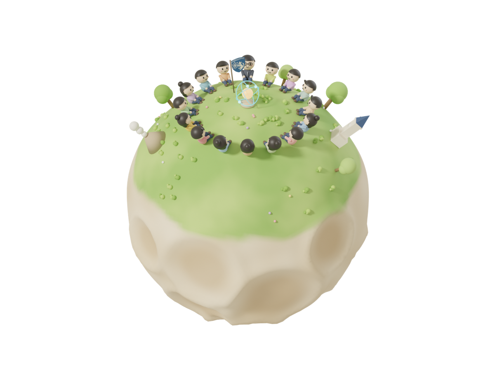
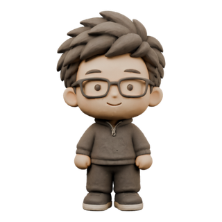

Machine learning and first-principles chemistry for better catalysts.

Each sphere is one of our papers: size is citations, colour is the field. Drag to spin it; click a sphere to open the paper.
Tap someone to visit their page.
We welcome PhD students, postdocs and visitors from chemistry, materials science, physics and computer science.